aapps
Eine Familie kleiner, werbefreier Android-Apps: ruhig, hübsch, ohne Tracking und ohne Internet.
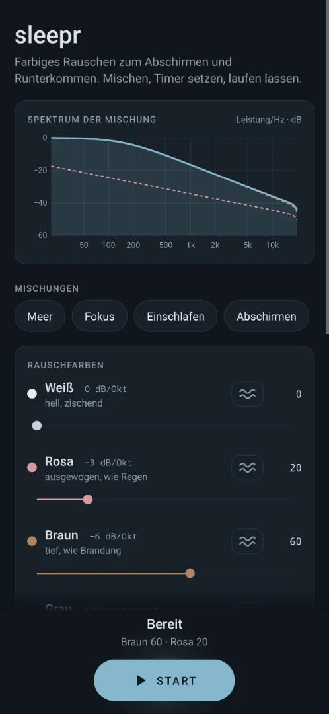
- Erzeugt weißes, rosa, braunes, graues und grünes Rauschen live am Handy und mischt es frei zusammen.
- Ganz ohne Audiodateien oder Schleifen, mit Meereswellen-Modus, Presets und Spektrumanzeige.
- Ideal zum Einschlafen, Konzentrieren oder Abschirmen, der Timer blendet am Ende sanft aus.
Karte als Bild
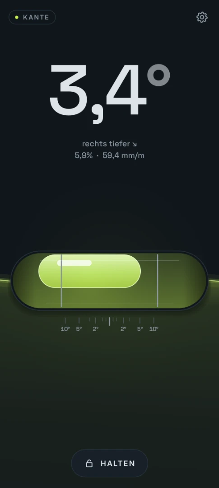
- Eine Wasserwaage, die genau zeigt, wie schief etwas ist, egal ob auf der Kante oder flach liegend.
- Die Blase schwappt mit echter Federphysik und rastet bei 0,0° spürbar ein, kalibrierbar in zwei Schritten.
- Perfekt zum Bilderaufhängen, Regalmontieren oder Tischausrichten.
Karte als Bild
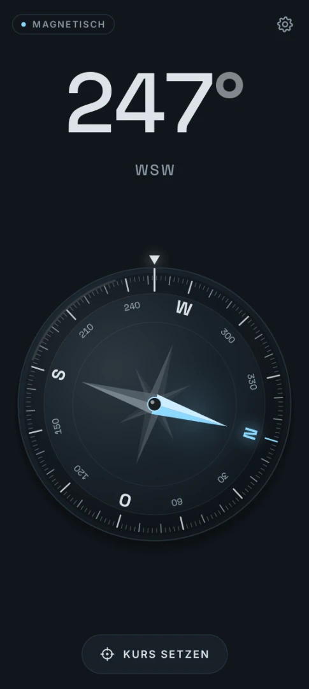
- Ein Kompass, der ruhig und genau zeigt, wohin dein Handy schaut.
- Funktioniert flach und aufrecht ohne Sprung, zeigt die Genauigkeit an und hält auf Wunsch einen Kurs.
- Praktisch beim Wandern, zum Orientieren oder um die Himmelsrichtung von Balkon und Fenster zu prüfen.
Karte als Bild
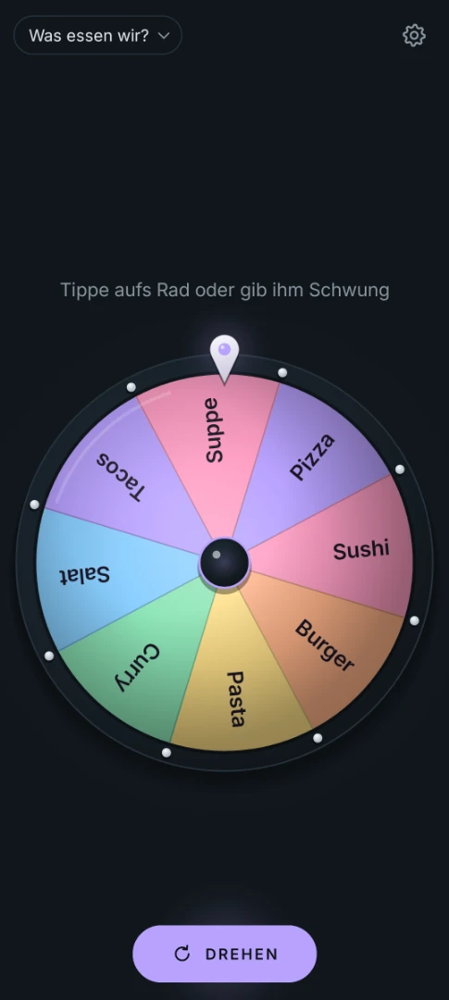
- Ein Glücksrad, das sich wie ein echtes dreht und fair irgendwo stehen bleibt.
- Mit Schwung anwerfen, bis zu 50 Einträge, eigene Räder und fertige Vorlagen.
- Für alle Fälle, wo keiner entscheiden will: was es zum Essen gibt oder wer als Nächstes dran ist.
Karte als Bild
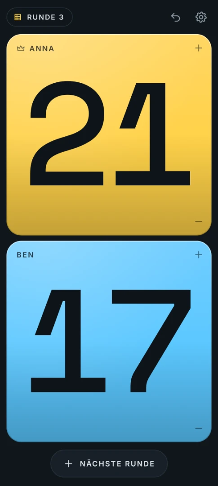
- Zählt Punkte beim Spieleabend, beim Kartenspielen oder beim Tischtennis.
- Jeder Spieler bekommt eine große Farbfläche: oben tippen heißt plus, unten minus, Ziehen zählt in Schritten.
- Für 1 bis 8 Spieler oder Teams, mit Rundenverlauf, Zettel und Stift kannst du dir sparen.
Karte als Bild
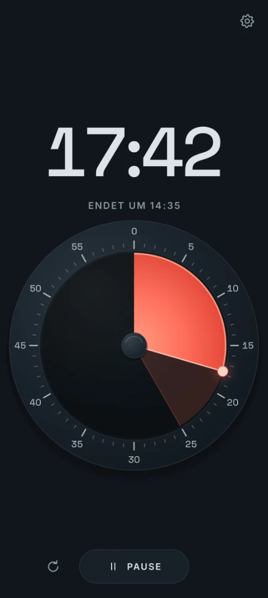
- Ein visueller Timer: Die Restzeit siehst du als farbige Scheibe, die langsam kleiner wird.
- Einfach am Rad drehen, Skala von 5 bis 120 Minuten, im Querformat auch schön am Beamer.
- Ideal zum Lernen, Kochen, für Besprechungen oder im Unterricht.
Karte als Bild
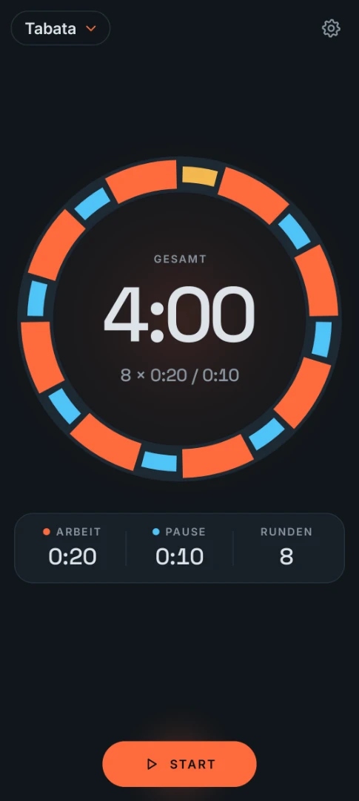
- Ein Intervall-Timer für HIIT, Tabata und Boxrunden.
- Arbeit und Pause wechseln sich ab, groß lesbar aus drei Metern, mit Ton und Vibration, auch bei gesperrtem Bildschirm.
- Mit fertigen Vorlagen oder eigenen Trainings, ideal fürs Workout daheim oder im Fitnessstudio.
Karte als Bild
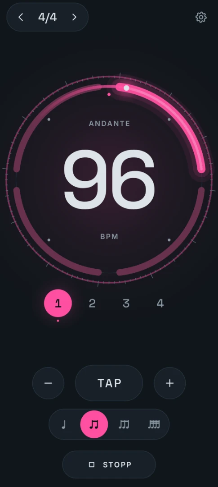
- Ein Metronom zum Üben: Tempo einstellen, Start drücken, fertig.
- Der Klick ist sample-genau und schwankt nicht, das Tempo stellst du per Drehrad, Plus/Minus oder Tap-Tempo ein.
- Für alle, die ein Instrument lernen oder im Takt bleiben wollen, ohne Werbung.
Karte als Bild
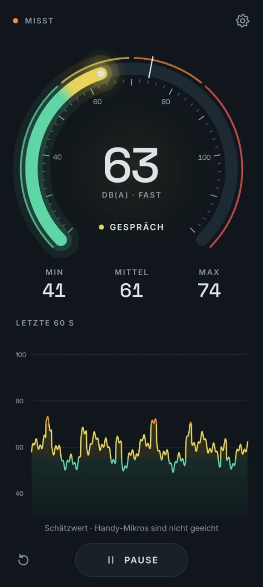
- Ein Lautstärke-Messer: App öffnen und sofort sehen, wie laut es gerade ist.
- Mit Alltagsvergleich wie Gespräch oder Rasenmäher, Minimum, Mittelwert, Maximum und Verlauf der letzten 60 Sekunden.
- Praktisch im Klassenzimmer, beim Konzert oder wenn der Nachbar zu laut ist, ein Schätzwert, kein Eichgerät.
Karte als Bild
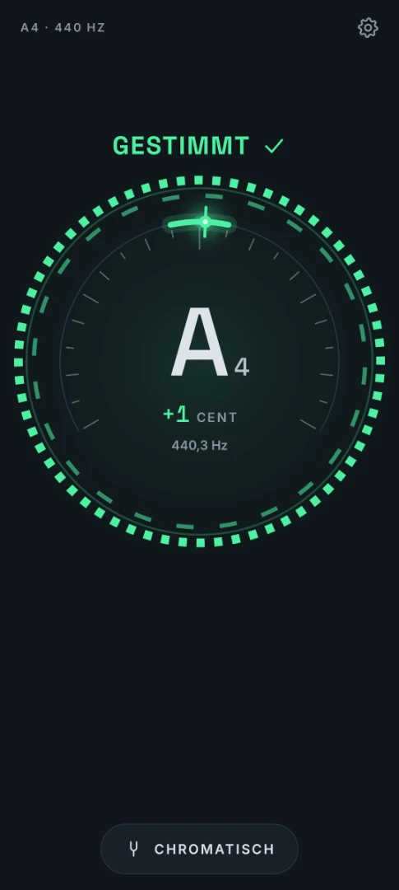
- Ein chromatisches Stimmgerät: Ton spielen, Note und Abweichung sofort ablesen.
- Erkennt Töne von der tiefsten Bass-Saite bis ganz hoch, auf den Cent genau, mit eigenen Modi für Instrumente wie die Gitarre.
- Für Gitarre, Geige, Ukulele und Co., ruhig, hübsch und ganz ohne Internet.
Karte als Bild
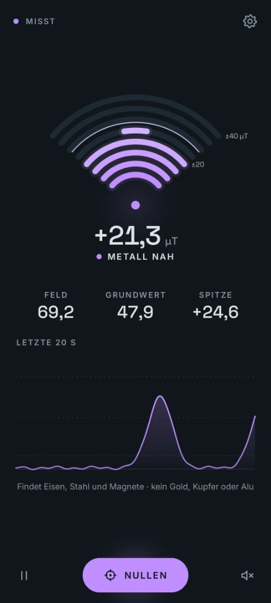
- Ein Metalldetektor und Magnetfeld-Messer mit Anzeige in Mikrotesla.
- Findet Schrauben, Nägel, Stahlträger und Magnete in der Nähe, mit Ausschlag, Verlauf und Ton.
- Ideal, bevor du in die Wand bohrst, und ehrlich: Er findet nur, was magnetisch ist.
Karte als Bild
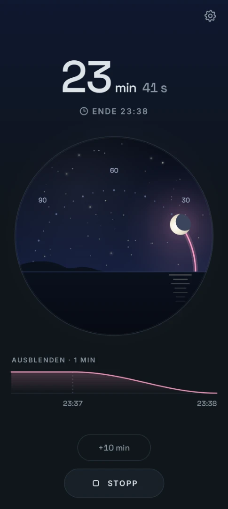
- Ein Einschlaf-Timer für jede App: Musik, Podcast, Hörbuch oder YouTube.
- Du ziehst den Mond am Nachthimmel hoch, dozr blendet dann sanft aus und stoppt die Wiedergabe.
- Danach ist die Lautstärke wieder wie vorher, die perfekte Schwester von sleepr.
Karte als Bild
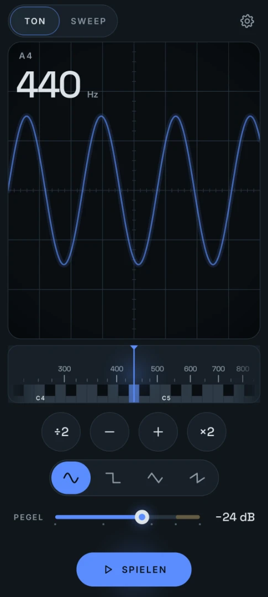
- Ein sauberer Tongenerator: ein reiner Ton mit genau einstellbarer Frequenz und Wellenform.
- Von 1 Hz bis 22 kHz, mit Notenname, Sweep-Modus und Oszilloskop-Ansicht.
- Für Lautsprecher- und Subwoofer-Tests, Raumresonanzen oder den Physikunterricht.
Karte als Bild
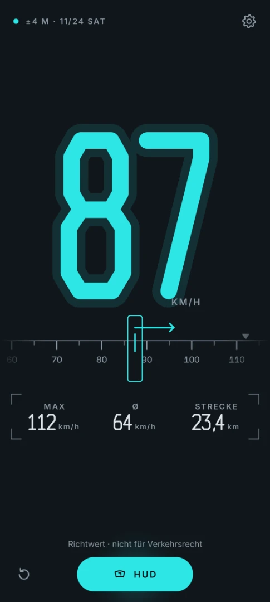
- Ein GPS-Tacho, der deine Geschwindigkeit riesig anzeigt.
- Der HUD-Modus spiegelt die Zahl für die Windschutzscheibe, und ohne Internet-Berechtigung bleibt dein Standort garantiert am Handy.
- Fürs Rad, Auto, Boot oder beim Laufen, ein Richtwert, kein Eichgerät.
Karte als Bild
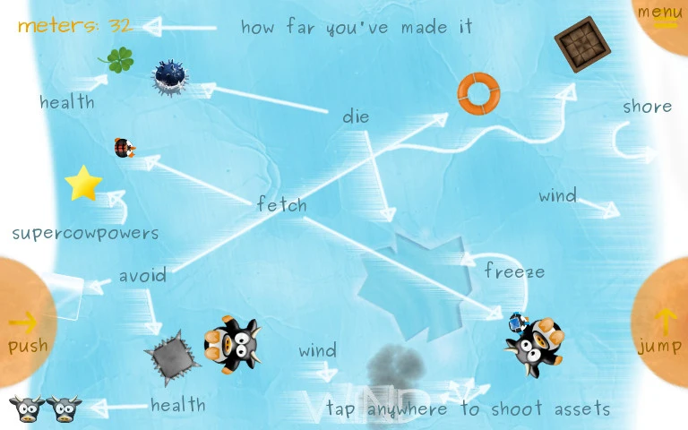
- Clumsy Cow: Eine tollpatschige Kuh hüpft über treibende Eisschollen, so weit sie nur kann.
- Springen, schieben, Stacheln ausweichen, Kleeblätter für Leben und Sterne für Kuh-Superkräfte sammeln.
- Ein lustiges Spiel für zwischendurch, ganz ohne Werbung und ohne Internet.
Karte als Bild
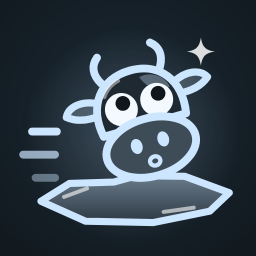
glidr
Spiel · Cool Cows on Ice
15
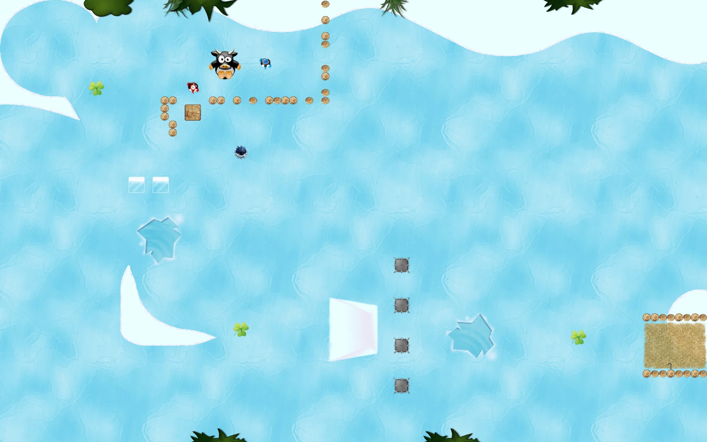
- Cool Cows on Ice: ein Physikrätsel, bei dem Kühe übers Eis schlittern.
- 48 Level mit echter Physik, Sternen pro Level und kniffligen Hindernissen wie Schanzen, Wasserlöchern und Stachelblöcken.
- Zum gemütlichen Knobeln für Groß und Klein, ganz ohne Werbung und ohne Internet.
Karte als Bild